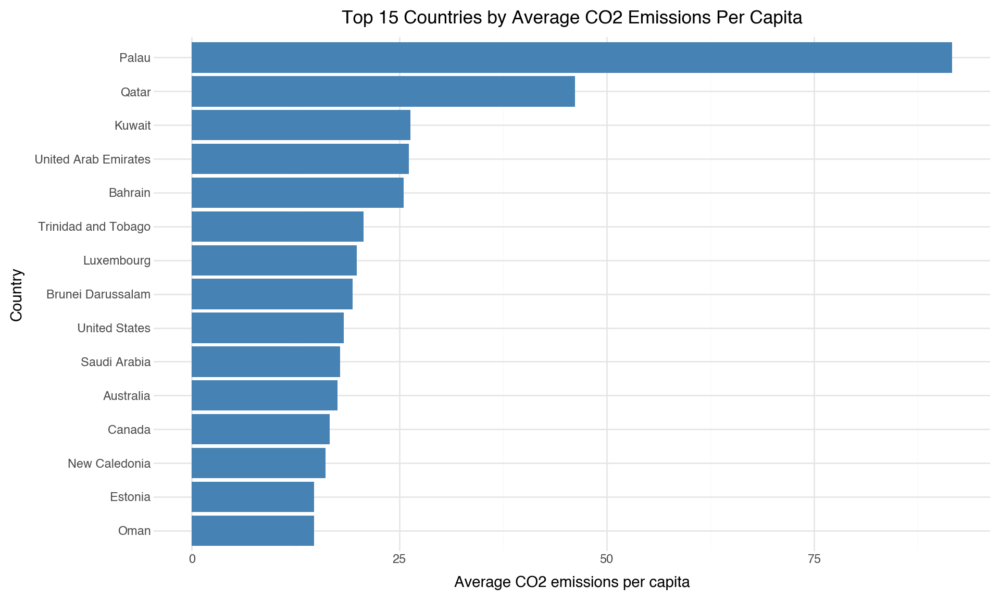
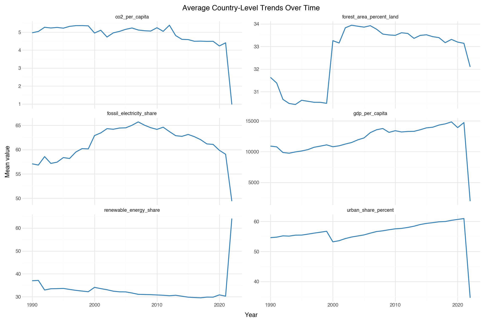
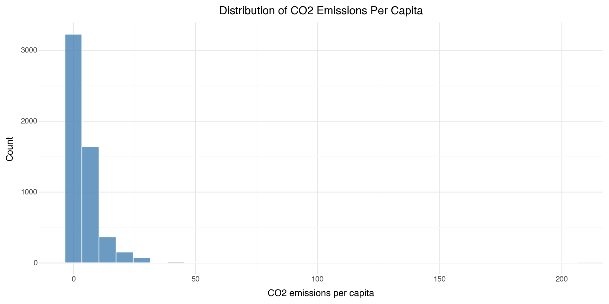
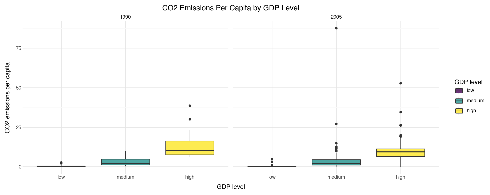
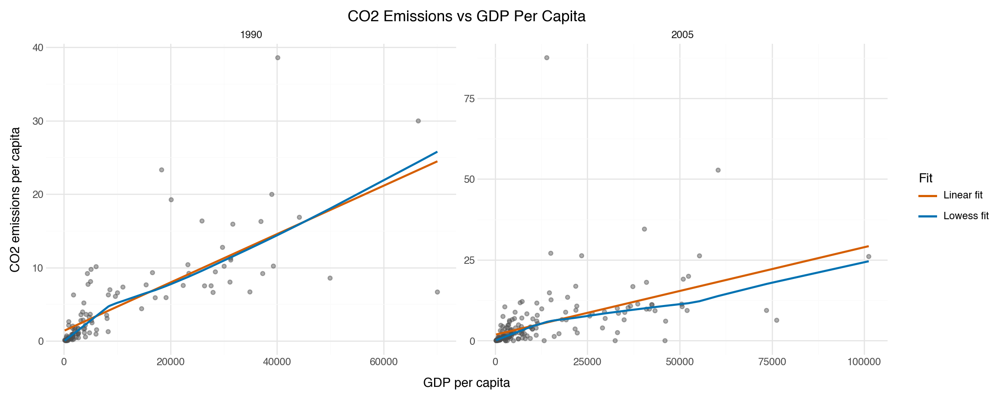
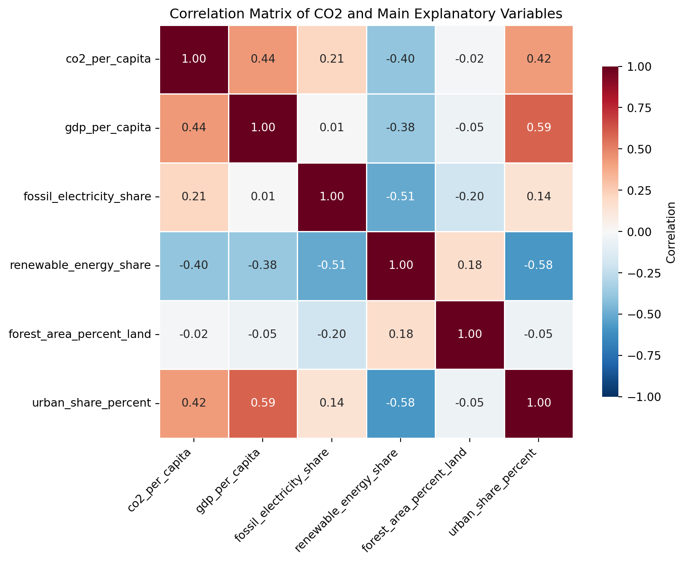

import json
import matplotlib.pyplot as plt
import numpy as np
import pandas as pd
import seaborn as sns
from plotnine import *
import re
import requests
import time
import warnings
from IPython.display import display
warnings.filterwarnings("ignore")JSC370 2026: Midterm Project
JSC370 (Winter 2026)
Environment Setup
Research Question
How have CO₂ emissions per capita evolved across countries from 1990 to 2023, and which economic, energy, and land-use factors explain these differences?
Introduction
Climate change is one of the major global challenges and is largely driven by greenhouse gas emissions, particularly carbon dioxide (CO₂). Emissions from human activities have played a central role in global warming. According to “Climate Change 2023 Synthesis Report” from the Intergovernmental Panel on Climate Change (IPCC), global surface temperature during 2011–2020 was about 1.1 °C higher than in 1850–1900 (IPCC, 2023). CO₂ emissions are also unevenly distributed across countries. Differences in per-capita emissions are closely related to variations in energy systems, economic structures, and levels of development. Understanding these differences is important for designing effective climate and energy policies.
Despite the global importance of reducing greenhouse gas emissions, countries differ significantly in both their levels of CO₂ emissions per capita and how these emissions have changed over time. These differences may be related to economic development, energy consumption patterns, and land-use practices. For example, roughly half of global CO₂ emissions are absorbed by land and ocean carbon sinks, while land-use changes such as deforestation and reforestation remain important components of the global carbon budget (Friedlingstein et al., 2023). Research on global greenhouse gas emissions also shows that fossil fuel combustion is the primary source of emissions, accounting for about 71.6% of recent global greenhouse gas emissions. At the same time, emissions intensity relative to GDP has reached historically low levels, suggesting a relationship between economic development and carbon output. To better understand how economic, energy, and land-use factors relate to cross-country differences in emissions, systematic analysis using comparable and reliable international data is necessary.
Methods
Data Acquisition (API)
WB_BASE_URL = "https://api.worldbank.org/v2"
# Indicator codes aligned with the research question
INDICATORS = {
"co2_per_capita": "EN.GHG.CO2.PC.CE.AR5",
"gdp_per_capita": "NY.GDP.PCAP.KD",
"fossil_electricity_share": "EG.ELC.FOSL.ZS",
"renewable_energy_share": "EG.FEC.RNEW.ZS",
"forest_area_percent_land": "AG.LND.FRST.ZS",
"population_total": "SP.POP.TOTL",
"urban_share_percent": "SP.URB.TOTL.IN.ZS"
}
# Units of measurement
# - CO2 per capita: metric tons per capita
# - GDP per capita: constant 2015 US$ per person
# - Fossil electricity share: percentage of electricity from fossil fuels
# - Renewable energy share: percentage of total final energy consumption
# - Forest area percent of land: percentage of land area
# - Population total: count
# - Urban share percent: percentage of population living in urban areas
START_YEAR = 1990
END_YEAR = 2023
def fetch_world_bank_indicator(indicator_code, start_year=1990, end_year=2023, per_page=20000):
page = 1
all_rows = []
while True:
url = f"{WB_BASE_URL}/country/all/indicator/{indicator_code}"
params = {
"format": "json",
"date": f"{start_year}:{end_year}",
"per_page": per_page,
"page": page,
}
response = requests.get(url, params=params, timeout=30)
response.raise_for_status()
payload = response.json()
if len(payload) < 2 or payload[1] is None:
break
all_rows.extend(payload[1])
total_pages = int(payload[0]["pages"])
if page >= total_pages:
break
page += 1
time.sleep(0.1)
return pd.DataFrame(all_rows)
# Pull raw records directly from the API for all required indicators
frames = []
for variable_name, indicator_code in INDICATORS.items():
df_i = fetch_world_bank_indicator(indicator_code, START_YEAR, END_YEAR)
df_i["variable_name"] = variable_name
frames.append(df_i)
wb_raw = pd.concat(frames, ignore_index=True)
# Keep only non-missing observed values for preview
wb_raw = wb_raw[wb_raw["value"].notna()].copy()
# Raw API preview dataframe (no local file saved)
display(wb_raw.head(20))
print("Shape:", wb_raw.shape)
print("Indicators in preview:", wb_raw["indicator"].apply(lambda x: x.get("id") if isinstance(x, dict) else None).nunique())| indicator | country | countryiso3code | date | value | unit | obs_status | decimal | variable_name | |
|---|---|---|---|---|---|---|---|---|---|
| 0 | {'id': 'EN.GHG.CO2.PC.CE.AR5', 'value': 'Carbo... | {'id': 'ZH', 'value': 'Africa Eastern and Sout... | AFE | 2023 | 0.838104 | 1 | co2_per_capita | ||
| 1 | {'id': 'EN.GHG.CO2.PC.CE.AR5', 'value': 'Carbo... | {'id': 'ZH', 'value': 'Africa Eastern and Sout... | AFE | 2022 | 0.858132 | 1 | co2_per_capita | ||
| 2 | {'id': 'EN.GHG.CO2.PC.CE.AR5', 'value': 'Carbo... | {'id': 'ZH', 'value': 'Africa Eastern and Sout... | AFE | 2021 | 0.899170 | 1 | co2_per_capita | ||
| 3 | {'id': 'EN.GHG.CO2.PC.CE.AR5', 'value': 'Carbo... | {'id': 'ZH', 'value': 'Africa Eastern and Sout... | AFE | 2020 | 0.897581 | 1 | co2_per_capita | ||
| 4 | {'id': 'EN.GHG.CO2.PC.CE.AR5', 'value': 'Carbo... | {'id': 'ZH', 'value': 'Africa Eastern and Sout... | AFE | 2019 | 0.984697 | 1 | co2_per_capita | ||
| 5 | {'id': 'EN.GHG.CO2.PC.CE.AR5', 'value': 'Carbo... | {'id': 'ZH', 'value': 'Africa Eastern and Sout... | AFE | 2018 | 0.998509 | 1 | co2_per_capita | ||
| 6 | {'id': 'EN.GHG.CO2.PC.CE.AR5', 'value': 'Carbo... | {'id': 'ZH', 'value': 'Africa Eastern and Sout... | AFE | 2017 | 1.013008 | 1 | co2_per_capita | ||
| 7 | {'id': 'EN.GHG.CO2.PC.CE.AR5', 'value': 'Carbo... | {'id': 'ZH', 'value': 'Africa Eastern and Sout... | AFE | 2016 | 1.025492 | 1 | co2_per_capita | ||
| 8 | {'id': 'EN.GHG.CO2.PC.CE.AR5', 'value': 'Carbo... | {'id': 'ZH', 'value': 'Africa Eastern and Sout... | AFE | 2015 | 1.046291 | 1 | co2_per_capita | ||
| 9 | {'id': 'EN.GHG.CO2.PC.CE.AR5', 'value': 'Carbo... | {'id': 'ZH', 'value': 'Africa Eastern and Sout... | AFE | 2014 | 1.096735 | 1 | co2_per_capita | ||
| 10 | {'id': 'EN.GHG.CO2.PC.CE.AR5', 'value': 'Carbo... | {'id': 'ZH', 'value': 'Africa Eastern and Sout... | AFE | 2013 | 1.087644 | 1 | co2_per_capita | ||
| 11 | {'id': 'EN.GHG.CO2.PC.CE.AR5', 'value': 'Carbo... | {'id': 'ZH', 'value': 'Africa Eastern and Sout... | AFE | 2012 | 1.073351 | 1 | co2_per_capita | ||
| 12 | {'id': 'EN.GHG.CO2.PC.CE.AR5', 'value': 'Carbo... | {'id': 'ZH', 'value': 'Africa Eastern and Sout... | AFE | 2011 | 1.065235 | 1 | co2_per_capita | ||
| 13 | {'id': 'EN.GHG.CO2.PC.CE.AR5', 'value': 'Carbo... | {'id': 'ZH', 'value': 'Africa Eastern and Sout... | AFE | 2010 | 1.107383 | 1 | co2_per_capita | ||
| 14 | {'id': 'EN.GHG.CO2.PC.CE.AR5', 'value': 'Carbo... | {'id': 'ZH', 'value': 'Africa Eastern and Sout... | AFE | 2009 | 1.108703 | 1 | co2_per_capita | ||
| 15 | {'id': 'EN.GHG.CO2.PC.CE.AR5', 'value': 'Carbo... | {'id': 'ZH', 'value': 'Africa Eastern and Sout... | AFE | 2008 | 1.192889 | 1 | co2_per_capita | ||
| 16 | {'id': 'EN.GHG.CO2.PC.CE.AR5', 'value': 'Carbo... | {'id': 'ZH', 'value': 'Africa Eastern and Sout... | AFE | 2007 | 1.160497 | 1 | co2_per_capita | ||
| 17 | {'id': 'EN.GHG.CO2.PC.CE.AR5', 'value': 'Carbo... | {'id': 'ZH', 'value': 'Africa Eastern and Sout... | AFE | 2006 | 1.142393 | 1 | co2_per_capita | ||
| 18 | {'id': 'EN.GHG.CO2.PC.CE.AR5', 'value': 'Carbo... | {'id': 'ZH', 'value': 'Africa Eastern and Sout... | AFE | 2005 | 1.152525 | 1 | co2_per_capita | ||
| 19 | {'id': 'EN.GHG.CO2.PC.CE.AR5', 'value': 'Carbo... | {'id': 'ZH', 'value': 'Africa Eastern and Sout... | AFE | 2004 | 1.150530 | 1 | co2_per_capita |
Shape: (59734, 9)
Indicators in preview: 7# Step 1: flatten nested columns
wb_raw["indicator_code"] = wb_raw["indicator"].apply(lambda x: x["id"] if isinstance(x, dict) else None)
wb_raw["indicator_name"] = wb_raw["indicator"].apply(lambda x: x["value"] if isinstance(x, dict) else None)
wb_raw["country_name"] = wb_raw["country"].apply(lambda x: x["value"] if isinstance(x, dict) else None)
# Step 2: convert date to numeric year and keep study period
wb_raw["year"] = pd.to_numeric(wb_raw["date"], errors="coerce")
wb_raw = wb_raw[(wb_raw["year"] >= 1990) & (wb_raw["year"] <= 2023)].copy()
# Step 3: remove regional aggregates using the HW2 metadata logic
def get_country_metadata():
page = 1
all_countries = []
while True:
params = {"format": "json", "per_page": 400, "page": page}
response = requests.get(f"{WB_BASE_URL}/country", params=params, timeout=30)
response.raise_for_status()
payload = response.json()
metadata = payload[0]
rows = payload[1]
all_countries.extend(rows)
if page >= int(metadata["pages"]):
break
page += 1
countries_df = pd.DataFrame(all_countries)
countries_df["region_name"] = countries_df["region"].apply(
lambda x: x.get("value") if isinstance(x, dict) else np.nan
)
return countries_df
countries_df = get_country_metadata()
valid_iso3 = set(countries_df.loc[countries_df["region_name"] != "Aggregates", "id"].dropna())
# HW-style aggregate checks before filtering
aggregate_rows = wb_raw[~wb_raw["countryiso3code"].isin(valid_iso3)].copy()
aggregate_pairs = aggregate_rows[["countryiso3code", "country_name"]].drop_duplicates()
print("Rows before removing aggregates:", wb_raw.shape[0])
print("Unique aggregate (iso3, country) pairs:", aggregate_pairs.shape[0])
display(aggregate_pairs.head(10))
# Remove aggregates
wb = wb_raw[wb_raw["countryiso3code"].isin(valid_iso3)].copy()
print("Rows after removing aggregates:", wb.shape[0])
# Step 4: keep only useful columns
wb_clean = wb[
[
"countryiso3code",
"country_name",
"year",
"variable_name",
"indicator_code",
"value",
]
].copy()
display(wb_clean.head(20))
print("Clean panel shape:", wb_clean.shape)
# Step 5: pivot to wide format (one row per country-year)
wb_wide = wb_clean.pivot_table(
index=["countryiso3code", "country_name", "year"],
columns="variable_name",
values="value",
).reset_index()
wb_wide.columns.name = None
# Step 6: apply lab-style plausibility checks and set implausible values to NaN
# (following lab03/lab04 pattern of identifying suspicious values then recoding)
plausibility_rules = {
"co2_per_capita": (0, None),
"gdp_per_capita": (0, None),
"fossil_electricity_share": (0, 100),
"renewable_energy_share": (0, 100),
"forest_area_percent_land": (0, 100),
"population_total": (0, None),
"urban_share_percent": (0, 100),
}
for col, (lower, upper) in plausibility_rules.items():
if col in wb_wide.columns:
if lower is not None:
wb_wide.loc[wb_wide[col] < lower, col] = np.nan
if upper is not None:
wb_wide.loc[wb_wide[col] > upper, col] = np.nan
# Step 7: check for duplicate country-year rows
duplicate_country_year = wb_wide.duplicated(["countryiso3code", "year"]).sum()
print("Duplicate country-year rows:", duplicate_country_year)Rows before removing aggregates: 59734
Unique aggregate (iso3, country) pairs: 48| countryiso3code | country_name | |
|---|---|---|
| 0 | AFE | Africa Eastern and Southern |
| 34 | AFW | Africa Western and Central |
| 68 | ARB | Arab World |
| 102 | CSS | Caribbean small states |
| 136 | CEB | Central Europe and the Baltics |
| 170 | EAR | Early-demographic dividend |
| 204 | EAS | East Asia & Pacific |
| 238 | EAP | East Asia & Pacific (excluding high income) |
| 272 | TEA | East Asia & Pacific (IDA & IBRD countries) |
| 306 | EMU | Euro area |
Rows after removing aggregates: 48548| countryiso3code | country_name | year | variable_name | indicator_code | value | |
|---|---|---|---|---|---|---|
| 1666 | AFG | Afghanistan | 2023 | co2_per_capita | EN.GHG.CO2.PC.CE.AR5 | 0.280995 |
| 1667 | AFG | Afghanistan | 2022 | co2_per_capita | EN.GHG.CO2.PC.CE.AR5 | 0.278421 |
| 1668 | AFG | Afghanistan | 2021 | co2_per_capita | EN.GHG.CO2.PC.CE.AR5 | 0.312157 |
| 1669 | AFG | Afghanistan | 2020 | co2_per_capita | EN.GHG.CO2.PC.CE.AR5 | 0.310825 |
| 1670 | AFG | Afghanistan | 2019 | co2_per_capita | EN.GHG.CO2.PC.CE.AR5 | 0.319753 |
| 1671 | AFG | Afghanistan | 2018 | co2_per_capita | EN.GHG.CO2.PC.CE.AR5 | 0.321419 |
| 1672 | AFG | Afghanistan | 2017 | co2_per_capita | EN.GHG.CO2.PC.CE.AR5 | 0.291328 |
| 1673 | AFG | Afghanistan | 2016 | co2_per_capita | EN.GHG.CO2.PC.CE.AR5 | 0.219353 |
| 1674 | AFG | Afghanistan | 2015 | co2_per_capita | EN.GHG.CO2.PC.CE.AR5 | 0.249091 |
| 1675 | AFG | Afghanistan | 2014 | co2_per_capita | EN.GHG.CO2.PC.CE.AR5 | 0.242702 |
| 1676 | AFG | Afghanistan | 2013 | co2_per_capita | EN.GHG.CO2.PC.CE.AR5 | 0.266540 |
| 1677 | AFG | Afghanistan | 2012 | co2_per_capita | EN.GHG.CO2.PC.CE.AR5 | 0.323442 |
| 1678 | AFG | Afghanistan | 2011 | co2_per_capita | EN.GHG.CO2.PC.CE.AR5 | 0.392641 |
| 1679 | AFG | Afghanistan | 2010 | co2_per_capita | EN.GHG.CO2.PC.CE.AR5 | 0.278192 |
| 1680 | AFG | Afghanistan | 2009 | co2_per_capita | EN.GHG.CO2.PC.CE.AR5 | 0.224491 |
| 1681 | AFG | Afghanistan | 2008 | co2_per_capita | EN.GHG.CO2.PC.CE.AR5 | 0.147376 |
| 1682 | AFG | Afghanistan | 2007 | co2_per_capita | EN.GHG.CO2.PC.CE.AR5 | 0.079669 |
| 1683 | AFG | Afghanistan | 2006 | co2_per_capita | EN.GHG.CO2.PC.CE.AR5 | 0.055794 |
| 1684 | AFG | Afghanistan | 2005 | co2_per_capita | EN.GHG.CO2.PC.CE.AR5 | 0.052298 |
| 1685 | AFG | Afghanistan | 2004 | co2_per_capita | EN.GHG.CO2.PC.CE.AR5 | 0.038301 |
Clean panel shape: (48548, 6)
Duplicate country-year rows: 0print(wb_wide.shape)
print("Memory (MB):", round(wb_wide.memory_usage(deep=True).sum() / 1024**2, 2))
display(wb_wide.head(10))
print("\nNumeric summary:")
display(wb_wide.describe())
display(wb_wide.dtypes)(7378, 10)
Memory (MB): 1.23| countryiso3code | country_name | year | co2_per_capita | forest_area_percent_land | fossil_electricity_share | gdp_per_capita | population_total | renewable_energy_share | urban_share_percent | |
|---|---|---|---|---|---|---|---|---|---|---|
| 0 | ABW | Aruba | 1990 | 3.203034 | 2.333333 | NaN | 24763.653810 | 62753.0 | 0.3 | 65.432816 |
| 1 | ABW | Aruba | 1991 | 3.435717 | 2.333333 | NaN | 25460.363027 | 65896.0 | 0.2 | 65.400922 |
| 2 | ABW | Aruba | 1992 | 3.634519 | 2.333333 | NaN | 25743.445501 | 69005.0 | 0.2 | 65.390589 |
| 3 | ABW | Aruba | 1993 | 3.414535 | 2.333333 | NaN | 25870.153396 | 73685.0 | 0.2 | 65.384467 |
| 4 | ABW | Aruba | 1994 | 3.683227 | 2.333333 | NaN | 26581.976749 | 77595.0 | 0.2 | 65.380048 |
| 5 | ABW | Aruba | 1995 | 3.939603 | 2.333333 | NaN | 26504.186418 | 79805.0 | 0.2 | 65.376703 |
| 6 | ABW | Aruba | 1996 | 2.490936 | 2.333333 | NaN | 25779.597928 | 83021.0 | 0.2 | 65.373804 |
| 7 | ABW | Aruba | 1997 | 3.974461 | 2.333333 | NaN | 26547.416608 | 86301.0 | 0.2 | 65.370721 |
| 8 | ABW | Aruba | 1998 | 3.970560 | 2.333333 | NaN | 26418.088330 | 88451.0 | 0.2 | 65.366825 |
| 9 | ABW | Aruba | 1999 | 3.969484 | 2.333333 | NaN | 26384.810594 | 89659.0 | 0.2 | 65.361486 |
Numeric summary:| year | co2_per_capita | forest_area_percent_land | fossil_electricity_share | gdp_per_capita | population_total | renewable_energy_share | urban_share_percent | |
|---|---|---|---|---|---|---|---|---|
| count | 7378.000000 | 6902.000000 | 7061.000000 | 6179.000000 | 6904.000000 | 7.378000e+03 | 6746.000000 | 7378.000000 |
| mean | 2006.500000 | 4.874354 | 32.605790 | 62.826615 | 14290.739994 | 3.080694e+07 | 30.726712 | 57.766502 |
| std | 9.811373 | 9.566943 | 24.816012 | 34.577817 | 21339.986751 | 1.238318e+08 | 30.521632 | 24.408991 |
| min | 1990.000000 | 0.000000 | 0.000000 | 0.000000 | 166.710440 | 8.798000e+03 | 0.000000 | 5.274941 |
| 25% | 1998.000000 | 0.492873 | 10.938566 | 34.844036 | 1592.270481 | 6.305872e+05 | 3.600000 | 37.242296 |
| 50% | 2006.500000 | 2.154123 | 31.002896 | 70.920098 | 4835.189262 | 5.386676e+06 | 19.500000 | 58.346914 |
| 75% | 2015.000000 | 6.228472 | 51.851852 | 96.661783 | 19027.653217 | 1.919320e+07 | 53.300000 | 77.427772 |
| max | 2023.000000 | 202.865184 | 96.226381 | 100.000000 | 225884.183304 | 1.438070e+09 | 98.300000 | 100.000000 |
countryiso3code object
country_name object
year int64
co2_per_capita float64
forest_area_percent_land float64
fossil_electricity_share float64
gdp_per_capita float64
population_total float64
renewable_energy_share float64
urban_share_percent float64
dtype: object# Check for missing values
missing_counts = wb_wide.isna().sum().sort_values(ascending=False)
missing_share = (wb_wide.isna().mean() * 100).round(2)
missing_tbl = pd.DataFrame({"missing_n": missing_counts, "missing_pct": missing_share})
display(missing_tbl)| missing_n | missing_pct | |
|---|---|---|
| co2_per_capita | 476 | 6.45 |
| country_name | 0 | 0.00 |
| countryiso3code | 0 | 0.00 |
| forest_area_percent_land | 317 | 4.30 |
| fossil_electricity_share | 1199 | 16.25 |
| gdp_per_capita | 474 | 6.42 |
| population_total | 0 | 0.00 |
| renewable_energy_share | 632 | 8.57 |
| urban_share_percent | 0 | 0.00 |
| year | 0 | 0.00 |
Preliminary Results
Exploratory Data Analysis
# Build one analysis-ready dataset for EDA
eda_vars = [
"co2_per_capita",
"gdp_per_capita",
"fossil_electricity_share",
"renewable_energy_share",
"forest_area_percent_land",
"population_total",
"urban_share_percent",
]
eda_df = wb_wide[["countryiso3code", "country_name", "year"] + eda_vars].copy()
print("shape:", eda_df.shape)
print("n_rows:", eda_df.shape[0])
print("n_cols:", eda_df.shape[1])
print("Unique countries:", eda_df["countryiso3code"].nunique())
print("Unique year counts per country:")
print(eda_df.groupby("country_name")["year"].nunique().value_counts().sort_index())
display(eda_df.head(10))shape: (7378, 10)
n_rows: 7378
n_cols: 10
Unique countries: 217
Unique year counts per country:
year
34 217
Name: count, dtype: int64| countryiso3code | country_name | year | co2_per_capita | gdp_per_capita | fossil_electricity_share | renewable_energy_share | forest_area_percent_land | population_total | urban_share_percent | |
|---|---|---|---|---|---|---|---|---|---|---|
| 0 | ABW | Aruba | 1990 | 3.203034 | 24763.653810 | NaN | 0.3 | 2.333333 | 62753.0 | 65.432816 |
| 1 | ABW | Aruba | 1991 | 3.435717 | 25460.363027 | NaN | 0.2 | 2.333333 | 65896.0 | 65.400922 |
| 2 | ABW | Aruba | 1992 | 3.634519 | 25743.445501 | NaN | 0.2 | 2.333333 | 69005.0 | 65.390589 |
| 3 | ABW | Aruba | 1993 | 3.414535 | 25870.153396 | NaN | 0.2 | 2.333333 | 73685.0 | 65.384467 |
| 4 | ABW | Aruba | 1994 | 3.683227 | 26581.976749 | NaN | 0.2 | 2.333333 | 77595.0 | 65.380048 |
| 5 | ABW | Aruba | 1995 | 3.939603 | 26504.186418 | NaN | 0.2 | 2.333333 | 79805.0 | 65.376703 |
| 6 | ABW | Aruba | 1996 | 2.490936 | 25779.597928 | NaN | 0.2 | 2.333333 | 83021.0 | 65.373804 |
| 7 | ABW | Aruba | 1997 | 3.974461 | 26547.416608 | NaN | 0.2 | 2.333333 | 86301.0 | 65.370721 |
| 8 | ABW | Aruba | 1998 | 3.970560 | 26418.088330 | NaN | 0.2 | 2.333333 | 88451.0 | 65.366825 |
| 9 | ABW | Aruba | 1999 | 3.969484 | 26384.810594 | NaN | 0.2 | 2.333333 | 89659.0 | 65.361486 |
print("Missing values:\n")
print(eda_df.isna().sum())
print("\nMissing percentage (%):\n")
print((eda_df.isna().mean() * 100).round(2))
print("\nSummary statistics:\n")
display(eda_df.describe())Missing values:
countryiso3code 0
country_name 0
year 0
co2_per_capita 476
gdp_per_capita 474
fossil_electricity_share 1199
renewable_energy_share 632
forest_area_percent_land 317
population_total 0
urban_share_percent 0
dtype: int64
Missing percentage (%):
countryiso3code 0.00
country_name 0.00
year 0.00
co2_per_capita 6.45
gdp_per_capita 6.42
fossil_electricity_share 16.25
renewable_energy_share 8.57
forest_area_percent_land 4.30
population_total 0.00
urban_share_percent 0.00
dtype: float64
Summary statistics:
| year | co2_per_capita | gdp_per_capita | fossil_electricity_share | renewable_energy_share | forest_area_percent_land | population_total | urban_share_percent | |
|---|---|---|---|---|---|---|---|---|
| count | 7378.000000 | 6902.000000 | 6904.000000 | 6179.000000 | 6746.000000 | 7061.000000 | 7.378000e+03 | 7378.000000 |
| mean | 2006.500000 | 4.874354 | 14290.739994 | 62.826615 | 30.726712 | 32.605790 | 3.080694e+07 | 57.766502 |
| std | 9.811373 | 9.566943 | 21339.986751 | 34.577817 | 30.521632 | 24.816012 | 1.238318e+08 | 24.408991 |
| min | 1990.000000 | 0.000000 | 166.710440 | 0.000000 | 0.000000 | 0.000000 | 8.798000e+03 | 5.274941 |
| 25% | 1998.000000 | 0.492873 | 1592.270481 | 34.844036 | 3.600000 | 10.938566 | 6.305872e+05 | 37.242296 |
| 50% | 2006.500000 | 2.154123 | 4835.189262 | 70.920098 | 19.500000 | 31.002896 | 5.386676e+06 | 58.346914 |
| 75% | 2015.000000 | 6.228472 | 19027.653217 | 96.661783 | 53.300000 | 51.851852 | 1.919320e+07 | 77.427772 |
| max | 2023.000000 | 202.865184 | 225884.183304 | 100.000000 | 98.300000 | 96.226381 | 1.438070e+09 | 100.000000 |
# Row-level missing-value handling, following the homework EDA workflow
core_eda_vars = [
"co2_per_capita",
"gdp_per_capita",
"fossil_electricity_share",
"renewable_energy_share",
"forest_area_percent_land",
]
rows_before = eda_df.shape[0]
countries_before = eda_df["countryiso3code"].nunique()
eda_complete = eda_df.dropna(subset=core_eda_vars).copy()
rows_after = eda_complete.shape[0]
countries_after = eda_complete["countryiso3code"].nunique()
print("Countries before filtering:", countries_before)
print("Countries after filtering:", countries_after)
print("Rows before row-level missing handling:", rows_before)
print("Rows dropped (had missing in core variables):", rows_before - rows_after)
print("Rows after row-level missing handling:", rows_after)
print("Any missing left in core variables:", eda_complete[core_eda_vars].isna().any().any())
print("\nUnique year counts per country after row-level filtering:")
print(eda_complete.groupby("country_name")["year"].nunique().value_counts().sort_index())
# GDP categories for grouped EDA, following the hw2/lab style
q1 = eda_complete["gdp_per_capita"].quantile(0.25)
q3 = eda_complete["gdp_per_capita"].quantile(0.75)
eda_complete["gdp_level"] = pd.cut(
eda_complete["gdp_per_capita"],
bins=[0, q1, q3, np.inf],
labels=["low", "medium", "high"],
include_lowest=True,
)
display(eda_complete.head(10))Countries before filtering: 217
Countries after filtering: 196
Rows before row-level missing handling: 7378
Rows dropped (had missing in core variables): 1879
Rows after row-level missing handling: 5499
Any missing left in core variables: False
Unique year counts per country after row-level filtering:
year
1 1
9 1
10 1
14 2
15 1
16 1
19 1
20 4
21 1
22 48
23 2
27 1
28 1
29 4
30 20
31 2
32 100
33 5
Name: count, dtype: int64| countryiso3code | country_name | year | co2_per_capita | gdp_per_capita | fossil_electricity_share | renewable_energy_share | forest_area_percent_land | population_total | urban_share_percent | gdp_level | |
|---|---|---|---|---|---|---|---|---|---|---|---|
| 10 | ABW | Aruba | 2000 | 2.968384 | 28104.895436 | 100.000000 | 0.2 | 2.333333 | 90588.0 | 65.354550 | high |
| 11 | ABW | Aruba | 2001 | 2.973567 | 29007.738696 | 100.000000 | 0.2 | 2.333333 | 91439.0 | 65.335114 | high |
| 12 | ABW | Aruba | 2002 | 3.225666 | 28535.463948 | 100.000000 | 0.2 | 2.333333 | 92074.0 | 65.282069 | high |
| 13 | ABW | Aruba | 2003 | 3.676660 | 28525.807706 | 100.000000 | 0.2 | 2.333333 | 93128.0 | 65.198292 | high |
| 14 | ABW | Aruba | 2004 | 3.672560 | 29959.774819 | 100.000000 | 0.2 | 2.333333 | 95138.0 | 65.088653 | high |
| 15 | ABW | Aruba | 2005 | 3.946331 | 29081.706700 | 100.000000 | 0.2 | 2.333333 | 97635.0 | 64.958023 | high |
| 16 | ABW | Aruba | 2006 | 4.267391 | 28885.911870 | 100.000000 | 0.2 | 2.333333 | 99405.0 | 64.811270 | high |
| 17 | ABW | Aruba | 2007 | 4.574139 | 29556.838469 | 100.000000 | 0.2 | 2.333333 | 100150.0 | 64.653266 | high |
| 18 | ABW | Aruba | 2008 | 4.503701 | 29870.664808 | 100.000000 | 0.2 | 2.333333 | 100917.0 | 64.488881 | high |
| 19 | ABW | Aruba | 2009 | 4.855124 | 26204.059736 | 98.199758 | 0.3 | 2.333333 | 101604.0 | 64.322985 | high |
def print_extremum_context(df, value_col, label):
min_idx = df[value_col].idxmin()
max_idx = df[value_col].idxmax()
min_row = df.loc[min_idx, ["country_name", "year", value_col]]
max_row = df.loc[max_idx, ["country_name", "year", value_col]]
print(f"\n{label} minimum at:")
print(min_row)
print(f"{label} maximum at:")
print(max_row)
print_extremum_context(eda_complete, "co2_per_capita", "CO2 emissions per capita")
print_extremum_context(eda_complete, "gdp_per_capita", "GDP per capita")
print_extremum_context(eda_complete, "fossil_electricity_share", "Fossil electricity share")
print_extremum_context(eda_complete, "renewable_energy_share", "Renewable energy share")
print_extremum_context(eda_complete, "forest_area_percent_land", "Forest area percent of land")
CO2 emissions per capita minimum at:
country_name Nauru
year 2000
co2_per_capita 0.0
Name: 5008, dtype: object
CO2 emissions per capita maximum at:
country_name Palau
year 2012
co2_per_capita 202.865184
Name: 5258, dtype: object
GDP per capita minimum at:
country_name Myanmar
year 1991
gdp_per_capita 166.71044
Name: 4421, dtype: object
GDP per capita maximum at:
country_name Luxembourg
year 2007
gdp_per_capita 112417.876989
Name: 3961, dtype: object
Fossil electricity share minimum at:
country_name Albania
year 2008
fossil_electricity_share 0.0
Name: 120, dtype: object
Fossil electricity share maximum at:
country_name Aruba
year 2000
fossil_electricity_share 100.0
Name: 10, dtype: object
Renewable energy share minimum at:
country_name United Arab Emirates
year 1990
renewable_energy_share 0.0
Name: 170, dtype: object
Renewable energy share maximum at:
country_name Congo, Dem. Rep.
year 2001
renewable_energy_share 98.3
Name: 1337, dtype: object
Forest area percent of land minimum at:
country_name Nauru
year 2000
forest_area_percent_land 0.0
Name: 5008, dtype: object
Forest area percent of land maximum at:
country_name Equatorial Guinea
year 1990
forest_area_percent_land 96.226381
Name: 2550, dtype: objectsummary_table = (
eda_complete
.groupby("year")[
[
"co2_per_capita",
"gdp_per_capita",
"fossil_electricity_share",
"renewable_energy_share",
"forest_area_percent_land",
"urban_share_percent",
]
]
.agg(["mean", "std"])
.round(2)
)
summary_table.columns = [f"{var}_{stat}" for var, stat in summary_table.columns]
summary_table = summary_table.reset_index()
display(summary_table.head(10))| year | co2_per_capita_mean | co2_per_capita_std | gdp_per_capita_mean | gdp_per_capita_std | fossil_electricity_share_mean | fossil_electricity_share_std | renewable_energy_share_mean | renewable_energy_share_std | forest_area_percent_land_mean | forest_area_percent_land_std | urban_share_percent_mean | urban_share_percent_std | |
|---|---|---|---|---|---|---|---|---|---|---|---|---|---|
| 0 | 1990 | 4.97 | 6.44 | 10912.32 | 14661.38 | 57.09 | 37.21 | 36.99 | 33.21 | 31.64 | 23.70 | 54.61 | 23.24 |
| 1 | 1991 | 5.04 | 6.81 | 10789.42 | 14443.50 | 56.84 | 36.99 | 37.14 | 33.17 | 31.39 | 23.56 | 54.78 | 23.22 |
| 2 | 1992 | 5.27 | 6.33 | 9873.91 | 13663.91 | 58.58 | 35.80 | 32.94 | 32.24 | 30.66 | 22.91 | 55.21 | 21.93 |
| 3 | 1993 | 5.23 | 6.34 | 9759.51 | 13525.15 | 57.18 | 36.57 | 33.48 | 32.47 | 30.48 | 22.57 | 55.13 | 22.09 |
| 4 | 1994 | 5.26 | 6.51 | 9967.04 | 13862.87 | 57.44 | 36.55 | 33.54 | 32.26 | 30.44 | 22.48 | 55.44 | 22.01 |
| 5 | 1995 | 5.22 | 6.46 | 10119.51 | 14099.48 | 58.38 | 36.32 | 33.63 | 31.94 | 30.62 | 22.48 | 55.46 | 22.09 |
| 6 | 1996 | 5.32 | 6.60 | 10339.86 | 14302.62 | 58.19 | 36.18 | 33.20 | 31.52 | 30.58 | 22.40 | 55.78 | 22.01 |
| 7 | 1997 | 5.36 | 6.90 | 10723.99 | 14826.73 | 59.52 | 35.49 | 32.80 | 31.31 | 30.54 | 22.32 | 56.13 | 21.94 |
| 8 | 1998 | 5.37 | 6.91 | 10908.47 | 15039.34 | 60.22 | 35.24 | 32.48 | 31.02 | 30.53 | 22.28 | 56.42 | 21.87 |
| 9 | 1999 | 5.35 | 6.96 | 11114.28 | 15310.12 | 60.17 | 35.21 | 32.19 | 30.63 | 30.49 | 22.21 | 56.74 | 21.79 |
top_emitters = (
eda_complete
.groupby("country_name", as_index=False)["co2_per_capita"]
.mean()
.sort_values("co2_per_capita", ascending=False)
.head(15)
)
(
ggplot(top_emitters, aes(x="reorder(country_name, co2_per_capita)", y="co2_per_capita"))
+ geom_col(fill="steelblue")
+ coord_flip()
+ labs(
title="Top 15 Countries by Average CO2 Emissions Per Capita",
x="Country",
y="Average CO2 emissions per capita",
)
+ theme_minimal()
+ theme(figure_size=(10, 6))
)
trend_df = (
eda_complete
.groupby("year", as_index=False)[
[
"co2_per_capita",
"gdp_per_capita",
"fossil_electricity_share",
"renewable_energy_share",
"forest_area_percent_land",
"urban_share_percent",
]
]
.mean()
)
trend_long = trend_df.melt(
id_vars="year",
var_name="variable",
value_name="mean_value",
)
(
ggplot(trend_long, aes(x="year", y="mean_value"))
+ geom_line(color="#2C7FB8", size=0.9)
+ facet_wrap("~variable", scales="free_y", ncol=2)
+ labs(
title="Average Country-Level Trends Over Time",
x="Year",
y="Mean value",
)
+ theme_minimal()
+ theme(figure_size=(12, 8))
)
(
ggplot(eda_complete, aes(x="co2_per_capita"))
+ geom_histogram(bins=30, fill="steelblue", color="white", alpha=0.8)
+ labs(
title="Distribution of CO2 Emissions Per Capita",
x="CO2 emissions per capita",
y="Count",
)
+ theme_minimal()
+ theme(figure_size=(10, 5))
)
plot_years = [1990, 2005, 2023]
eda_box = eda_complete[eda_complete["year"].isin(plot_years)].copy()
eda_box["year"] = eda_box["year"].astype(str)
(
ggplot(eda_box, aes(x="gdp_level", y="co2_per_capita", fill="gdp_level"))
+ geom_boxplot(alpha=0.8)
+ facet_wrap("~year", nrow=1)
+ labs(
title="CO2 Emissions Per Capita by GDP Level",
x="GDP level",
y="CO2 emissions per capita",
fill="GDP level",
)
+ theme_minimal()
+ theme(figure_size=(12, 4.8))
)
eda_scatter = eda_complete[eda_complete["year"].isin(plot_years)].copy()
eda_scatter["year"] = eda_scatter["year"].astype(str)
(
ggplot(eda_scatter, aes(x="gdp_per_capita", y="co2_per_capita"))
+ geom_point(alpha=0.45, size=1.5, color="#4D4D4D")
+ geom_smooth(aes(color='"Linear fit"'), method="lm", se=False, size=1.0)
+ geom_smooth(aes(color='"Lowess fit"'), method="lowess", se=False, size=1.0)
+ scale_color_manual(values={"Linear fit": "#D55E00", "Lowess fit": "#0072B2"})
+ facet_wrap("~year", nrow=1, scales="free")
+ labs(
title="CO2 Emissions vs GDP Per Capita",
x="GDP per capita",
y="CO2 emissions per capita",
color="Fit",
)
+ theme_minimal()
+ theme(figure_size=(12, 4.8))
)
corr_vars = [
"co2_per_capita",
"gdp_per_capita",
"fossil_electricity_share",
"renewable_energy_share",
"forest_area_percent_land",
"urban_share_percent",
]
corr_df = eda_complete[corr_vars].copy()
correlation_tbl = corr_df.corr().round(3)
plt.figure(figsize=(9, 7))
sns.heatmap(
correlation_tbl,
annot=True,
fmt=".2f",
cmap="RdBu_r",
vmin=-1,
vmax=1,
center=0,
square=True,
linewidths=0.5,
cbar_kws={"shrink": 0.8, "label": "Correlation"},
)
plt.title("Correlation Matrix of CO2 and Main Explanatory Variables")
plt.xticks(rotation=45, ha="right")
plt.yticks(rotation=0)
plt.tight_layout()
plt.show()
Summary
References
-IPCC PDF -https://essd.copernicus.org/articles/15/5301/2023/ -